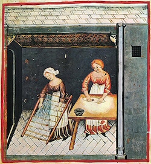
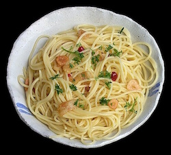

History of Pasta
Pasta’s earliest roots begin in China, during the Shang Dynasty, where some form of pasta was made with either wheat or rice flour.
Pasta also appears to be featured in the ancient Greek diet in the first millennium BC.
Likewise, Africa had its own form of pasta made with the kamut crop.
The link of pasta to Italy begins as early as 400 BC, where evidence of Etruscans making pasta was found.
However, the first concrete information on pasta products dates back to the 13th to 14th centuries.

Types of Pasta
While some sources say that there are over 1300 pasta names, this number goes a lot deeper than that.
This number was a result of a person interviewing people in Italy and noted a bunch of pasta names[source], which is not accurate to the total number of pasta shapes, as some names didn't have a known shape, some names were just variations on size, and some names were different for the same shape.
Therefore, there are about 140 to 300 pasta shapes today, depending on the level of distinction.[source]
There are 2 different types of pasta, fresh pasta made with low-gluten flour and dried pasta made with high-gluten flour.
The low-gluten flour mixes with egg, increasing protein and binding the dough together which formed simple shapes to compliment delicate sauces.
Meanwhile, the high-gluten flour was hydrated with water, forming strong yet inelastic dough, which is then sculpted and dried into more complex shapes that held against chunkier sauces.
Some of these pasta shapes should be familiar to you, such as: spaghetti, macaroni, penne, fettuccine, gnocchi, linguine, and rigatoni.
Likewise, there are hundreds of pasta dishes made with these pasta shapes as well!
One of my favourites is aglio e olio, a garlicky, oily pasta dish made with spaghetti noodles.

Not submitted
Process of making Pasta
~Minigame~